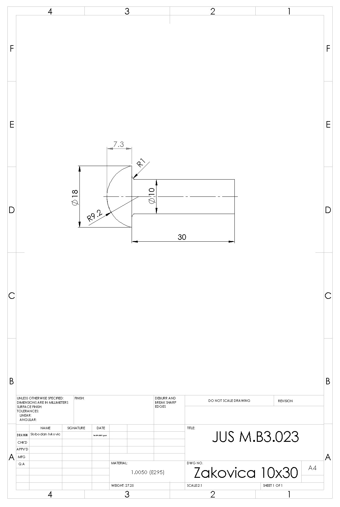
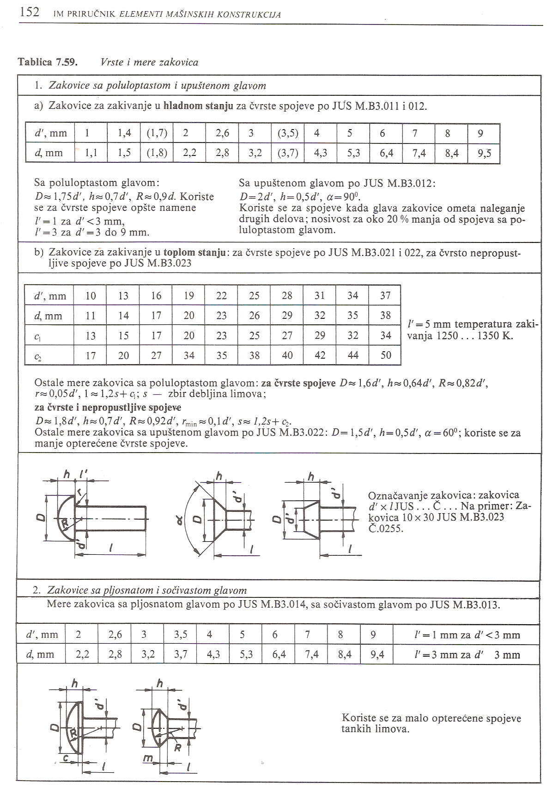
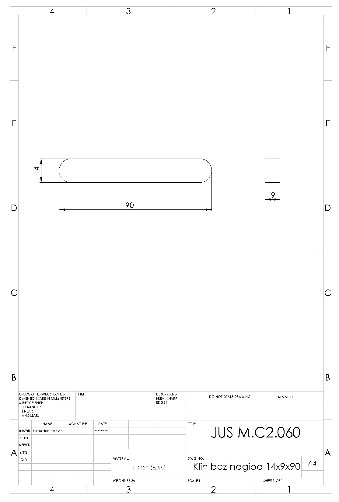
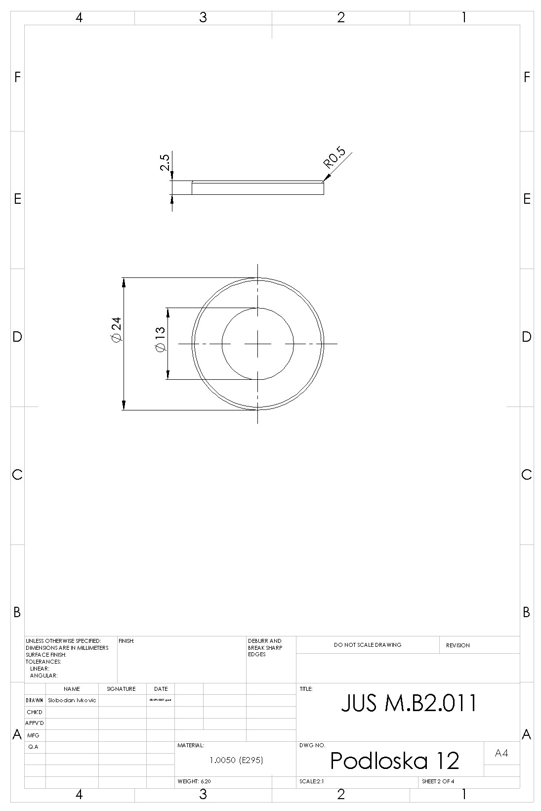
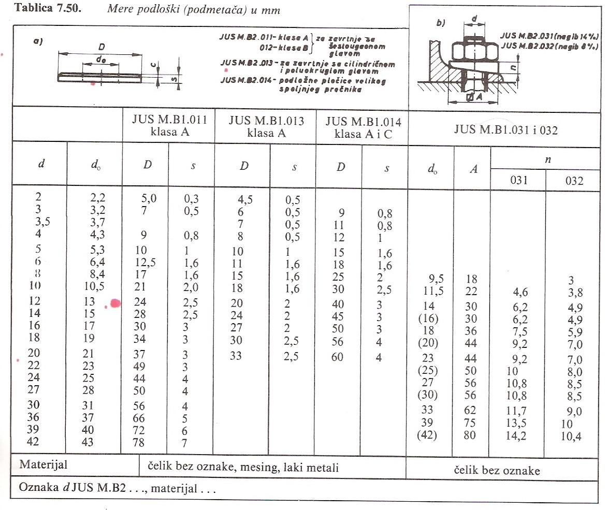
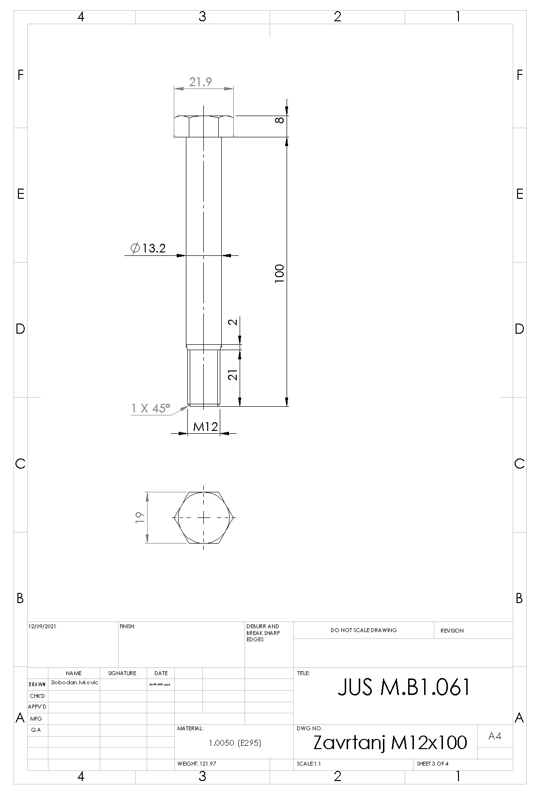
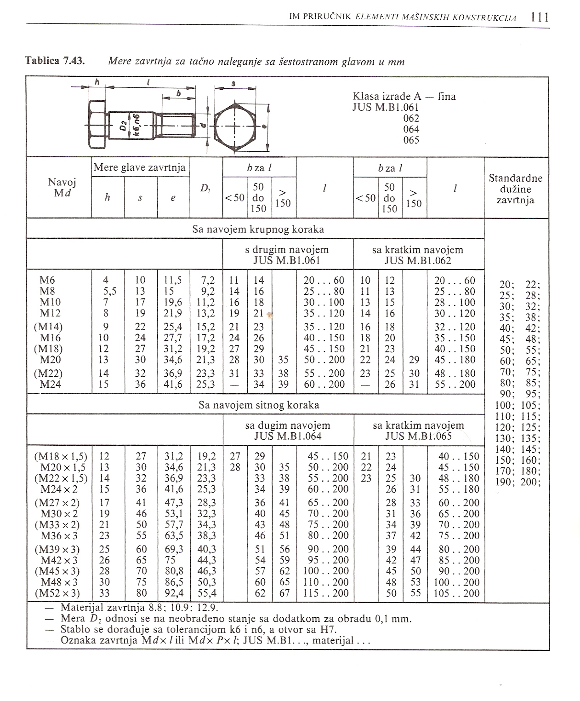
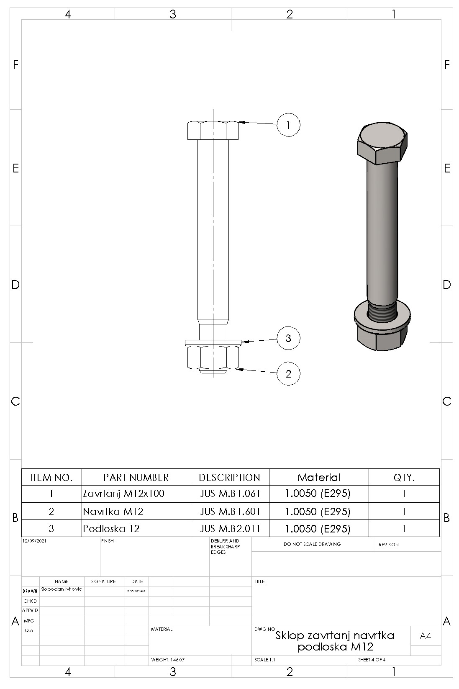

Моделирање стандардних машинских елемената шк. 2022/23. год.


На основу података из Т 7.59 израђујемо модел:


Стандардне дужине клинова: 20, 25, 28, 32, 36, 40, 45, 50, 56, 63, 70, 80, 90, 100, 110, 125, 140, 180, 200, ... , 400, а за нормалне клинове и још: 5, 8, 10, 12, 15, 16, 18.

На основу података из Т 4.7 израђујемо модел:


На основу података из Т 7.50 израђујемо модел:


На основу података из Т 7.43 израђујемо модел:

Навртку, подлошку и завртањ убацујемо у склоп "Bottom-Up" поступком: